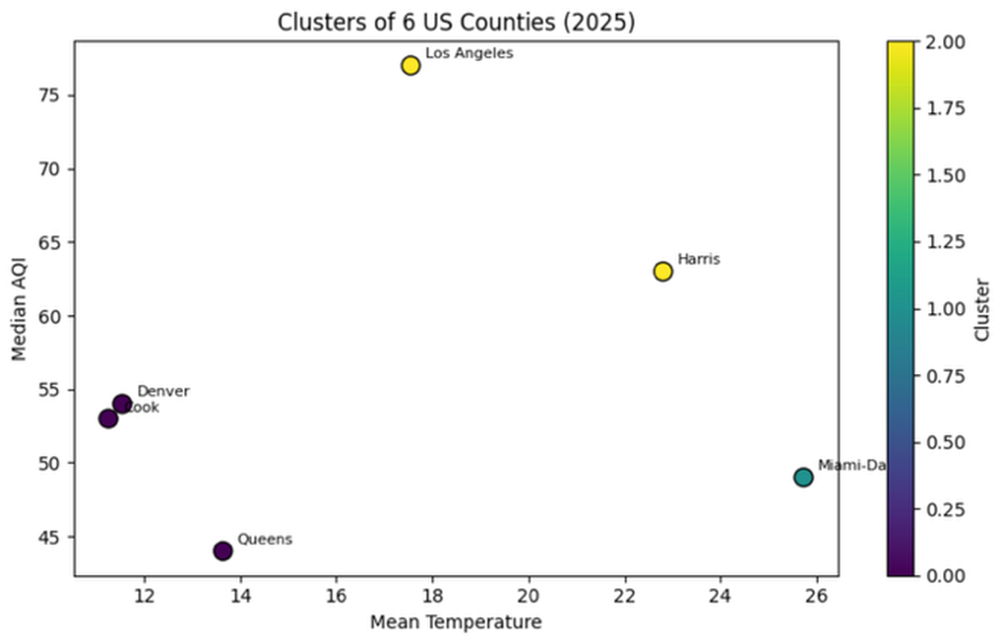
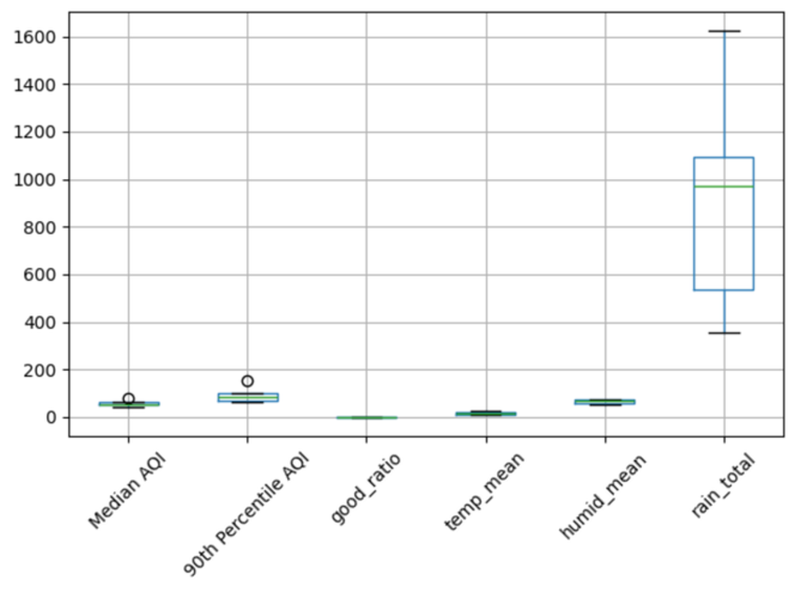
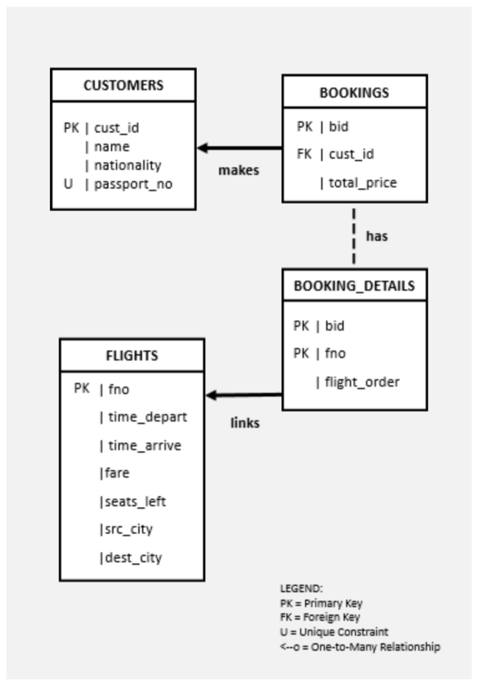

Project 1
Does Weather Explain Air Quality?
Clustering US counties by air quality and climate

',' class=\'img-placeholder\'>p1-cluster-scatter.png
Replace with image
Portfolio · Hong Kong Baptist University
Learning to turn data into stories.
About
I'm a final-year Computer Science student at Hong Kong Baptist University, concentrating in Data and Media Communication. I enjoy looking for the reasons behind numbers and asking why. I'm interested in using data to understand social issues and turning information into meaningful stories.
What I work with
Where each skill actually showed up in my projects and work — not a self-rating, just where it's been used.
Projects
Project 1
Clustering US counties by air quality and climate

',' class=\'img-placeholder\'>Los Angeles is infamous for its smog. Miami is hotter and more humid, so I wanted to test whether weather drives air quality.
Air quality: EPA annual AQI summaries for 2025. We measured Median AQI, 90th Percentile AQI, and the share of days rated "Good" (good ratio).
Weather: Mean temperature, humidity and total precipitation: NOAA Local Climatological Data for 2025, using one airport station per state.
Counties: Six large counties from six states: Los Angeles (CA), Harris (TX), Queens (NY), Cook (IL), Miami-Dade (FL) and Denver (CO).

',' class=\'img-placeholder\'>Air quality measures move together; weather barely moves with them. Median AQI and 90th Percentile AQI correlate at 0.96, and the good-day ratio moves in the opposite direction (−0.91 and −0.83). But mean temperature and Median AQI correlate at only 0.17.
Air quality measures cluster together; temperature barely touches them.
Three clusters, three different stories:
Cluster profiles — each metric on its own scale so bars stay comparable across clusters.
Key insight: Miami-Dade and Los Angeles/Harris are similarly warm and humid, but Miami-Dade has cleaner air. Clustering is driven by "Good" days, not temperature. Weather is only part of the story; traffic, industry, geography and wildfire smoke may also matter.
Python, pandas, scikit-learn (MinMaxScaler, KMeans), matplotlib
Project 2 · COMP3115
Reducing 14 air-quality indicators with PCA · Group project, COMP3115 · Mar–Apr 2026 · My role: PCA and clustering in PCA space

County air-quality data contains many similar measures, so I wanted to identify the key differences between counties and visualize them clearly.
EPA annual air-quality summaries for counties across the six states, with 14 indicators per county, including AQI category days, AQI maximum, 90th percentile and median, and days dominated by CO, NO₂, ozone, PM2.5 and PM10.

The two dimensions have clear meanings:


The key insight: Counties differ in two separate ways. Some are bad every day, others are mostly fine but hit by severe episodes. Looking only at average AQI would hide the second group.
Python, pandas, scikit-learn (StandardScaler, PCA, KMeans), matplotlib, seaborn
Project 3 · COMP2016
Oracle SQL and Python · Group project, COMP2016 · [placeholder: months/year] · My role: [placeholder: confirm role, e.g. database design, security and documentation]
How to simulate a database system of flight booking?
Four related tables: Customers, Flights, Bookings and Booking_Details. Booking_Details lets one booking hold up to three flights, in order. The system was set up with three sample customers and three sample flights: Hong Kong to Tokyo (CX100), Tokyo to New York (CX101) and Hong Kong to Beijing (CX102).

',' class=\'img-placeholder\'>How to read it
Entity-relationship diagram: customers make bookings, bookings contain booking details, and booking details link to flights.
A worked example with the sample data: there is no direct flight from Hong Kong to New York, so the search combines CX100 (12:00–16:00) with CX101 (18:30–23:30). The fare is (2000 + 4000) × 0.9 = 5400 and the trip takes 11.5 hours. Booking both flights takes one seat from each. CX102 has only one seat, so a second booking on it would be rejected by the seat check and the whole booking rolled back.
Key insight: putting the rules in the database, not only in the Python app, keeps the data correct no matter which program writes to it.
Booking flow
Annotated SQL
Oracle SQL and PL/SQL, Python (python-oracledb)
↑ Back to top of projectsExperience
| Period | Role | Organisation | Lane |
|---|
Teaching & Communication
Alongside my degree, I coach Chinese debate teams in three schools and help primary students prepare for secondary-school interviews. My job is to help students build an argument, listen to the other side and respond under pressure.
As a member of the HKBU Chinese Debate Team (2023–26), I competed in the Hong Kong Intercollegiate Cantonese Debate League (2024–25) and won my debates. The team also won the Inter-collegiate Debate Competition (2023–24) and the Kowloon Cup (2025–26).
Sep 2026 – Present · Chinese Debate Coach
Sep – Dec 2026 · Debate Tutor
Oct – Nov 2026 · Interview Class Assistant
Oct 2026 – May 2027 · Debate Tutor
Contact